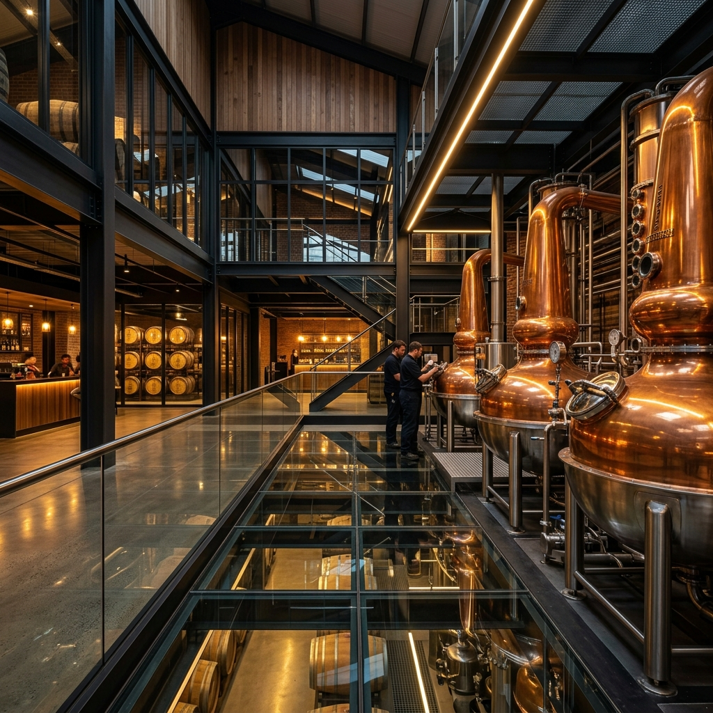
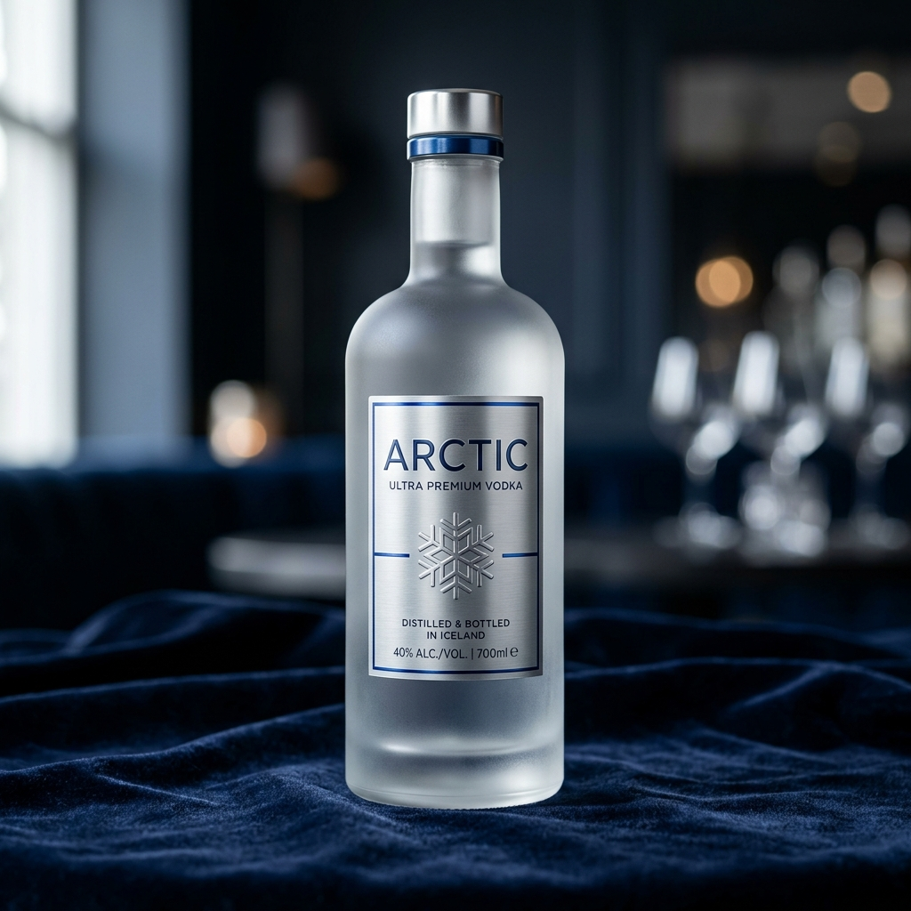

The Industrial Backbone
We control every step of the supply chain, ensuring unmatched ENA purity, quality compliance, and manufacturing scalability.

Dual Distillery Infrastructure
Our plants at Kashipur and Gorakhpur feature high-capacity grain-based and molasses continuous distillation systems, producing exceptionally pure Extra Neutral Alcohol (ENA).

Self-Sufficient Supply Chain
Captive ENA production, on-site glass & carton packaging plants, and high-efficiency automated bottling lines reduce costs and protect against supply disruptions.

Global Co-Packing Alliance
For more than 10 years, IGL has been a trusted business partner for Bacardi, managing blending, regulatory approvals, and maturation plants for their international portfolios.